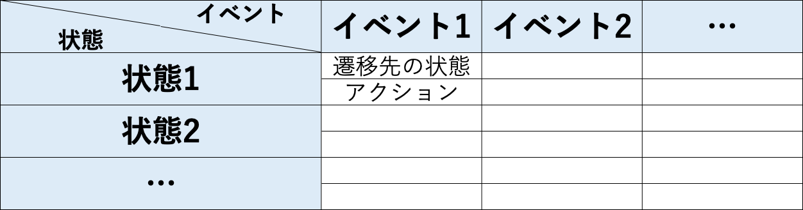
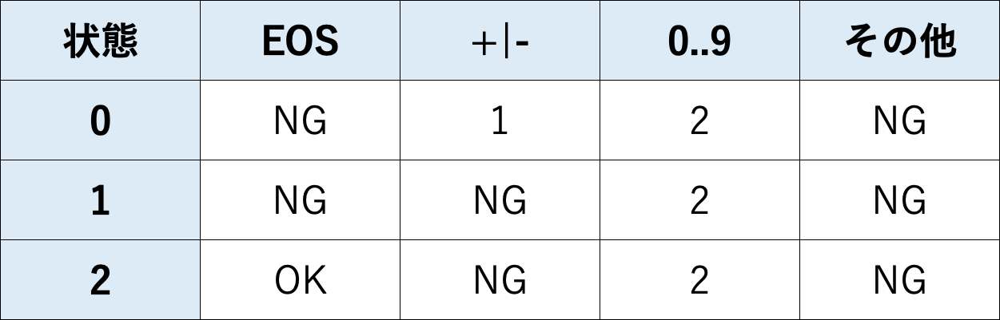
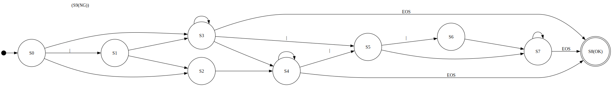

<!doctype html>
<html lang="en">
	<head>
		<meta charset="utf-8">
		<meta name="viewport" content="width=device-width, initial-scale=1.0, maximum-scale=1.0, user-scalable=no">

		<title>reveal.js</title>

		<link rel="stylesheet" href="dist/reset.css">
		<link rel="stylesheet" href="dist/reveal.css">
		<link rel="stylesheet" href="dist/theme/black.css">

		<!-- Theme used for syntax highlighted code -->
		<link rel="stylesheet" href="plugin/highlight/monokai.css">
	</head>
	<body>
		<div class="reveal">
			<div class="slides">
				<section data-markdown=""
				data-separator="^\n---$"
				data-separator-vertical="^\n>>>$">
				<script type="text/template">
### 計算モデルからみたプログラミング(2)
株式会社 ボールド 技術部 鳥海秀一


---
### 前回のまとめ
- - -
* 状態遷移図を使ってコンピュータの処理を表現することができる
* 状態遷移図はgoto文を使って簡単にプログラムに変換することができる

---
### 今回のテーマ
- - -
* goto文の機械的除去
* テーブル駆動方式

---
### goto文の機械的除去方法
- - -
* フラグを１つ用意する
* goto文をフラグに状態を代入する文に置き換える
* gotoのラベルをswitch文のcase句に置き換える
* プログラム全体を無限ループで囲む

---
### 演習問題1
- - -
* goto文を使った整数判定のプログラムからgoto文を除去せよ

---
### 演習問題1実演

---
### 練習問題1
- - -
* goto文を使った浮動小数点数判定のプログラムからgoto文を除去せよ

---
### goto文の機械的除去について
- - -
* フラグを使えばプログラムからgoto文を機械的に除去することができる
* そうしてできたプログラムは元のプログラム同様見づらいものとなる

---
### テーブル駆動方式とは
- - -
* テーブル駆動方式は判定文をテーブルの情報に置き換えるプログラミング手法
* スティーブ・マコネルの著書「コードコンプリート」でテーブル駆動方式として紹介された

---
### 状態遷移表とは
- - -
* 状態遷移図を表の形にまとめたものを状態遷移表という
* 状態遷移表の表現力は状態遷移図と同等である

---
### 状態遷移表の記述方法
- - -
* 記述方法は下記の通りとなる


---
### 演習問題2
- - -
* 下記の整数判定の状態遷移図から状態遷移表を作成せよ(アクションは省略すること)


---
### 演習問題2解答例
- - -


---
### 演習問題3
- - -
* 作成した状態遷移表を使ってテーブル駆動方式を用いた整数判定のプログラムを作成せよ

---
### 演習問題3実演

---
### 練習問題2
- - -
* 下記の浮動小数点数判定の状態遷移図から状態遷移表を作成せよ(アクションは省略すること)



---
### 練習問題3
- - -
* 浮動小数点数判定の状態遷移表を使ってテーブル駆動方式を用いた浮動小数点数判定のプログラムを作成せよ

---
### テーブル駆動方式について
- - -
* テーブル駆動方式を用いるとプログラムを短く簡潔に記述することができる
* プログラムが短くまとまるため、やり過ぎると解読が困難になる

---
### プログラム設計技法のまとめ
- - -
* 基礎的なプログラムの設計技法は以下の通り
	* データ構造からプログラムを設計する
	* 状態遷移図からプログラムを設計する
	* データ駆動方式でプログラムを設計する

---
### データ構造からプログラムを設計
- - -
* この技法を使うとプログラムの可読性が高くなりやすいため、大抵のプログラムでは検討の第一候補となる
* 紹介した技法の中ではこの技法が最も難しく、 使いこなすには訓練が必要となる

---
### 状態遷移図からプログラムを設計
- - -
* この技法を使う状況は複雑な字句解析を行う場合などに限られる
* ループとフラグを使ったプログラムはごくたまに見かけるので慣れておく必要がある

---
### データ駆動方式でプログラムを設計
- - -
* 決まりきった処理を何度も記述する必要が出てきた時にこの技法の使用を検討すると良い
* 使いすぎるとプログラムが読みづらくなるため、使用を控えるか、しっかりしたドキュメントを残すかを検討する必要がある

---
### まとめ
- - -
* 紹介した技法を使うとプログラム設計を楽に行えるようになります
* 今後、プログラムを作るときに活用してみてください

---
### ご清聴ありがとうございました

</script>
				</section>
</div>
		</div>

		<script src="dist/reveal.js"></script>
		<script src="plugin/notes/notes.js"></script>
		<script src="plugin/markdown/markdown.js"></script>
		<script src="plugin/highlight/highlight.js"></script>
		<script>
			// More info about initialization & config:
			// - https://revealjs.com/initialization/
			// - https://revealjs.com/config/
			Reveal.initialize({
				hash: true,

				// Learn about plugins: https://revealjs.com/plugins/
				plugins: [ RevealMarkdown, RevealHighlight, RevealNotes ]
			});
		</script>
	</body>
</html>
